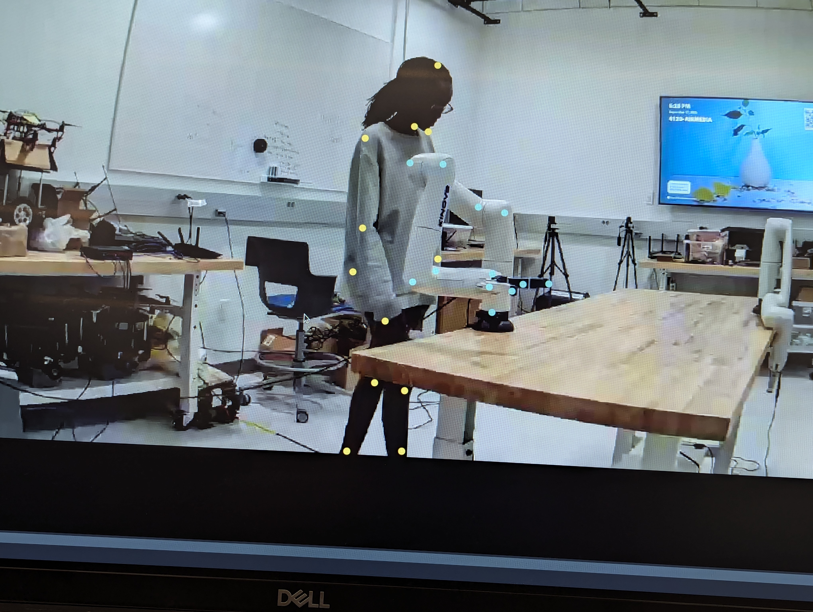
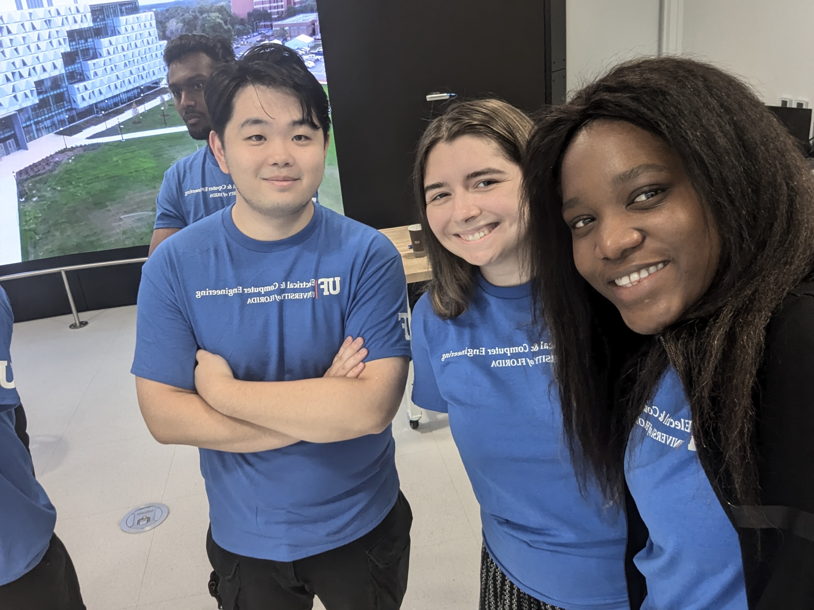
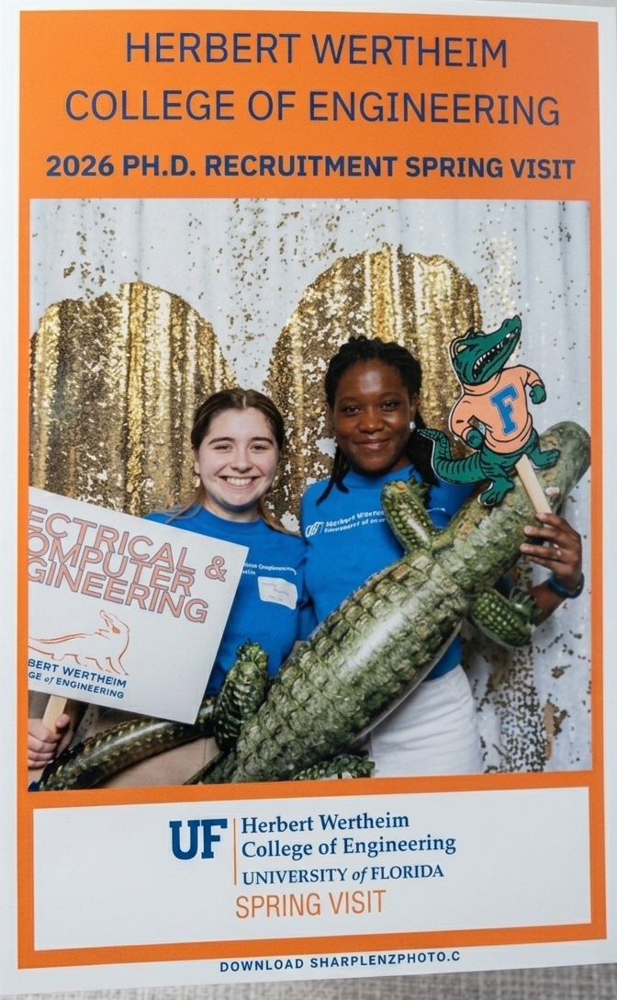
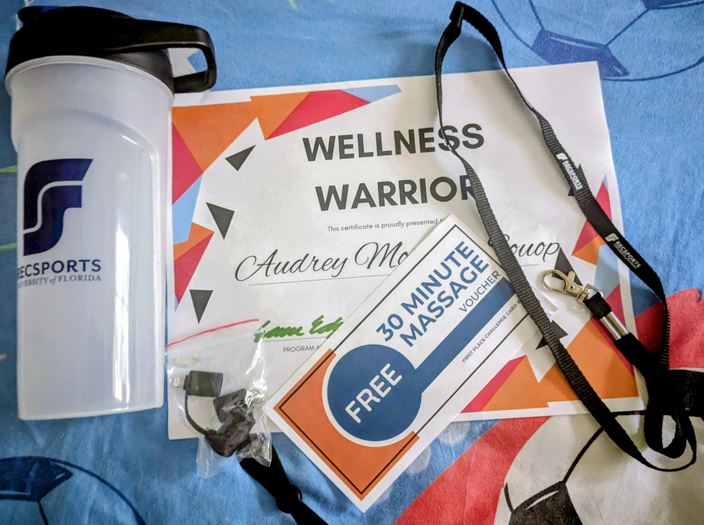
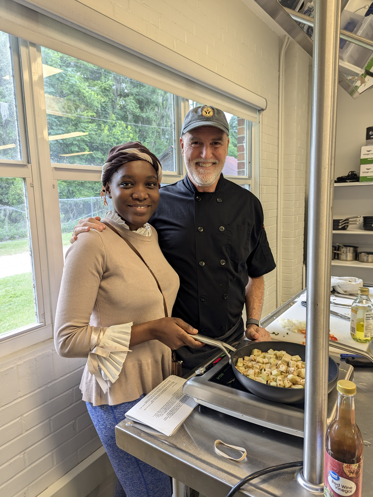

My Background
I am a PhD student in Electrical and Computer Engineering at the University of Florida, where I specialize in Hardware Acceleration for Robotics and Computer Vision. My research focuses on RTL Design, FPGA Acceleration, and HW/SW Co-design for real-time robotics and AI systems.
My passion for engineering stems from a deep interest in bridging the gap between hardware and software to build efficient, high-performance embedded systems. I am driven by the challenge of designing hardware accelerators that push the boundaries of what is possible in real-time computer vision and autonomous robotics.



Education
Specializing in hardware acceleration for robotics and computer vision. My research focuses on RTL design, FPGA acceleration, and hardware–software co-design for real-time AI and autonomous systems. I also work on human and robot pose estimation using multi-view vision for safe human–robot collaboration. In addition, I volunteered for the Spring Visit 2026 program organized by the University of Florida.
My thesis topic focused on the prevention of bed-related falls for elderly and isolated patients through a computer vision system that combines mattress segmentation with real-time patient tracking. By fine-tuning YOLOv7 and YOLOv5 models on a custom dataset of 3,485 images, this research achieves up to 99% accuracy in mattress detection and successfully integrates centroid tracking to monitor patient movements within hospital environments.
My final project focused on the digitalization of transport management through an agile-developed, multi-user platform for shippers and carriers. By integrating real-time Google Maps tracking, the system optimized delivery conditions and reduced internal logistics dependencies.
During my undergraduate studies, I was an active member of the computer science club. I worked on identifying problems in how local beauty salons were managed. I helped build a simple management system using Java EE and MySQL, following the MERISE methodology to design and organize the data. This experience, along with my courses in Operating Systems and Database Management, helped me learn how to turn real-world needs into practical and structured software solutions.
Outside Of Work
During my free time, I enjoy staying active through both outdoor and indoor exercise. I regularly participate in fitness programs offered by UF RecSports. I also enjoy visiting museums in Gainesville. I have a strong interest in cooking and had the opportunity to attend a cuisine demonstration through the Field & Fork Program at the University of Florida. Coming from a family where my parents specialize in French pastries, I especially enjoy baking cakes, decorating, and experimenting with new recipes. I am also actively involved in my church community, where I worship on Sunday mornings at Parkview Baptist Church in Gainesville.

